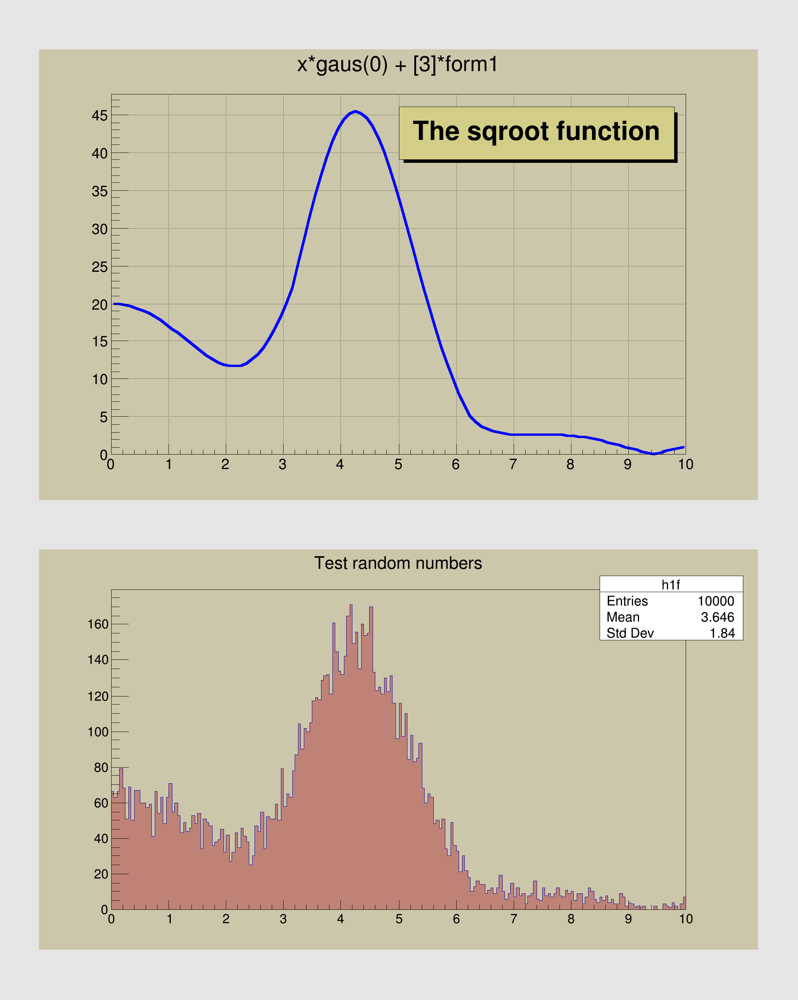

Fill a 1-D histogram from a parametric function.
Fill a 1-D histogram from a parametric function.
Original tutorial by Rene Brun.

from ROOT import TCanvas, TPad, TFormula, TF1, TPaveLabel, TH1F, TFile
from ROOT import gROOT, gBenchmark
c1 =
TCanvas(
'c1',
'The FillRandom example', 200, 10, 700, 900 )
c1.SetFillColor( 18 )
pad1 =
TPad(
'pad1',
'The pad with the function', 0.05, 0.50, 0.95, 0.95, 21 )
pad2 =
TPad(
'pad2',
'The pad with the histogram', 0.05, 0.05, 0.95, 0.45, 21 )
pad1.Draw()
pad2.Draw()
pad1.cd()
gBenchmark.Start( 'fillrandom' )
form1 =
TFormula(
'form1',
'abs(sin(x)/x)' )
sqroot =
TF1(
'sqroot',
'x*gaus(0) + [3]*form1', 0, 10 )
sqroot.SetParameters( 10, 4, 1, 20 )
pad1.SetGridx()
pad1.SetGridy()
pad1.GetFrame().SetBorderMode( -1 )
sqroot.SetLineColor( 4 )
sqroot.SetLineWidth( 6 )
sqroot.Draw()
lfunction =
TPaveLabel( 5, 39, 9.8, 46,
'The sqroot function' )
lfunction.SetFillColor( 41 )
lfunction.Draw()
c1.Update()
pad2.cd();
pad2.GetFrame().SetBorderMode( -1 )
h1f =
TH1F(
'h1f',
'Test random numbers', 200, 0, 10 )
h1f.SetFillColor( 45 )
h1f.FillRandom( 'sqroot', 10000 )
h1f.Draw()
c1.Update()
myfile =
TFile(
'py-fillrandom.root',
'RECREATE' )
form1.Write()
sqroot.Write()
h1f.Write()
myfile.Close()
gBenchmark.Show( 'fillrandom' )
- Author
- Alberto Ferro
Definition in file fillrandom.py.

 ROOT 6.18/03 - Reference Guide Generated on Thu Aug 29 2019 04:10:15 (GVA Time) using Doxygen 1.8.14.
ROOT 6.18/03 - Reference Guide Generated on Thu Aug 29 2019 04:10:15 (GVA Time) using Doxygen 1.8.14.